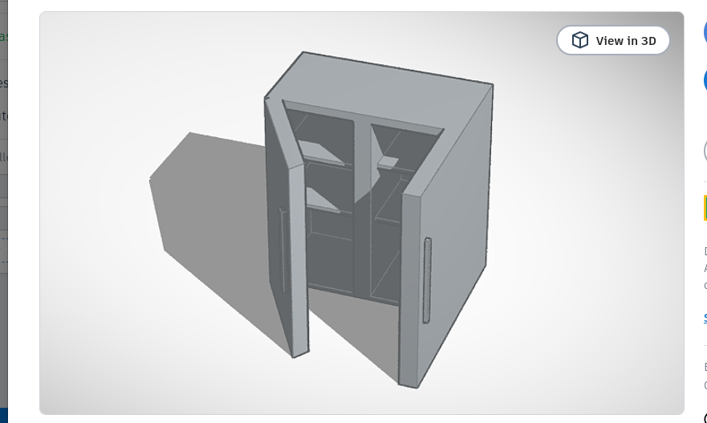
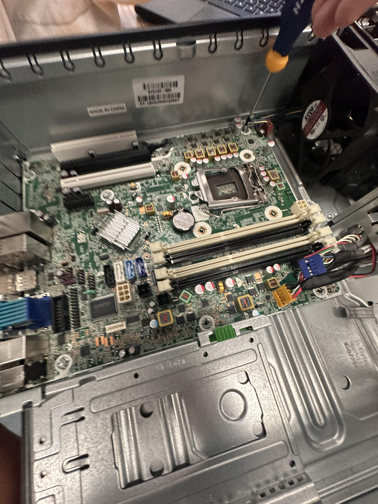
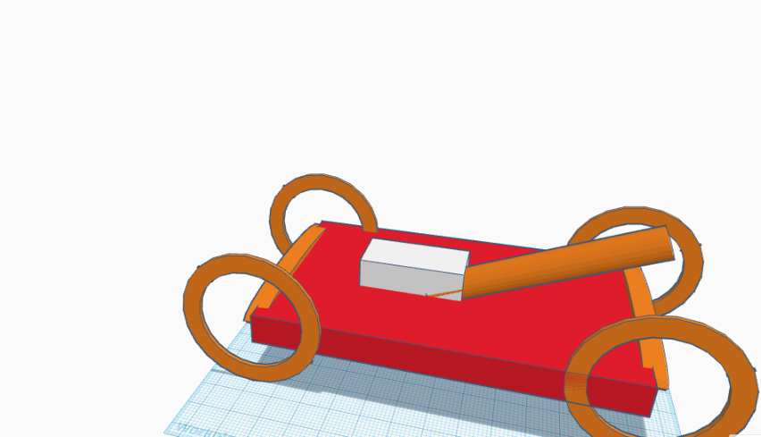

My Super Aesthetic Cutie Patootie Journal

8/21/23 - 8/24 Week 1
This week in Intro to Engineering I learned what a Rube
Rube Goldberg machine is. I also learned how to keep myself safe in
class. We saw different videos on how to keep ourselves safe, what
the consequences are for not keeping yourself safe, and what may
happen if you don't use the proper safety materials. I also
learned basic codes amd how to use AWS. We got introduced
to different websites including GitHub. To end our week we did
a game with marbles and sticks to see which team could finish
the fastest.

8/28/23 - 9/01/2023 Week 2
This week in Intro to Engineering I learned how to use
TinkerCad and we took our first quiz. We learned more about
Mechanical Engineering and safety in engineering class.
Ms. Petrosian showed us multiple videos on safety, and
one on ivention and innovation. We began to plan out our
Rube Goldberg machines with our groups and began to build
it on TinkerCad. We also took notes on mechanical engineering
safety, and how to be successful in the engineering process.

9/05/23 - 9/08/23 Week 3
This week in Intro to Engineering we started our first phase of
building our Rube Goldberg machines. We came across some
complications but soon overcame them and began our project.
We used our example from TinkerCad to help us build it.
We built the layout of the project and are looking for more
inspiration to help us build the machine.
9/11/23 - 9/15/23 Week 4
This week in Intro to Engineering we finished our Rube
Goldberg Machines. Due to my partner being sick and having
to leave multiple groups, we fell behind but still managed
to finish the project. It was a little frustrating to build it
but we came up with multiple different ideas and we were
successful. We failed multiple times but we fixed the problems
and learned from our mistakes. We're going to test our project
next Monday to see if our machine was a success.
9/18/23 - 9/22/23 Week 5
Thi week in Intro to Engineering we did two different challenges.
We did a challenge on a flotation device to see whos could last
the longest. At first I wasn't positive that it was going to work
due to it being too heavy, but then I removed some weights and it
allowed it to float. Our second project was to make a paper E with
the proper dimensions. I made my 'E' a little too big causing the
person that built the 'E' to face complications.
9/25/23 - 9/29/23 Week 6
This week in Intro to Engineering we dissected a computer.
We learned the different components and parts of a computer.
We took a quiz on what we learned about the different parts
of a computer and on computer engineering. I feel like I learned
a lot more on what there is to know about engineering. We did a
worksheet to remember how much we know about the different parts
inside a computer. Although I found it a little challenging I got
help and learned something new from it.

10/02/23 - 10/06/23 Week 7
This week in engineering we learned more about BioEngineering and
what it does to help people. We did a worksheet on it to help us
learn more about it and we did a project on it. We made prosthetic
hands using carboard to pick up a water bottle. It was kind of hard
to do because we kept messing up and we didn't know to do to fix it
and so it made the challenge more difficult for us. Also to help
us learn more about BioEngineering we did another assignment on
TinkerCad to make an animal prosthetic that works efficiently
for the animal.
10/09/23 - 10/14/23 Week 8
This week in engineering we took a quiz on BioEngineering to test
our knowledge on the topic. We started a new topic on aerospace
engineering which I'm very interested in and want to learn more
about it. We're starting a new project next week and joined new
groups. I'm looking forward to the new project, making a rocket
out of a coke bottle, because it seems like a fun project
and I think it's something that can help me learn more about aerospace
engineering. Even thought it may be more challenging I feel like
it's something that can teach me more about what there is to know
about engineering.
10/16/23 - 10/20/23 Week 9
This week in Intro to Engineering, to help us learn more about
aerospace engineering, we made rockets out of coke bottles.
To make our bottle fly we gave it wings made out of cardboard.
We had to add the right amount of water to make sure that it flys
to the distance that we wanted it to go to. Overall, our test project
went really well and I expected it to be worst, it went pretty far
but it definitely went further then we thought it would've gone.
We used 50 pr and if we had to do something different I would
probably change the wings to make it fly more efficiently.
10/23/23 - 10/27/23 Week 10
This week in Intro to Engineer we learned about environmental
engineering and I learned that evnironmental engineering
is meant to help the environment and find solutions
to the problems that our environment has. Our water clarification
project went really well and I think that the color was just a little
yellow at the end. The order of our project was first cotton then rocks
then pebbles then sand. Our water was sort of clear but it could've been
clearer. I would put the rocks on the bottom then the cotton.
10/30/23 - 11/03/23 Week 11
This week in Engineerign we learned the basics of circuit boards
and what the different components on a circuit board are. We used
a breadboard on TinkerCad to help us learn more about circuit boards
by doing two labs. I found the labs really difficult to understand
because it seemed really complicated especially on lab two. I learned
what voltage is and how to measure it with a multimeter.
11/06/23 - 11/10/23 Week 12
During week 12 we learned how to use circuit boards which I found
really confusing. We used Arduino to code the circuit board and make it
have different lighting patterns. We coded it to turn the LEDs on the
circuit board on and off. I learned what the difference is with a parallel
circuit and a series circuit. The same amount of current
flows throughout what's placed on the circuit board and a parallel
is when the two LEDs are placed parallel to each other and the current
is split.
11/13/23 - 11/17/23 Week 13
This week in Engineering we learned about Business Engineering
which I find really interesting because it's something that you
can see in a lot of different places throughout your life.
I learned that in order to learn business engineering you
need to understand design thinking, customer obsession, and
the different fields of business engineering and what they do.
We started a project on making our own product and being able to
sell it successfully by creating slides based off of Shark Tank
to test our knowledge. My idea was to create a mascara that has a
serum in it that allows your eyelashes to grow healthier and more
efficiently and include a mascara that doesn't damage your eyelashes.
11/27/23 - 12/01/23 Week 14
This week in Engineering we worked on our Shark Tank Pitch slides
to further learn about Business Engineering. The product I decided to
create was a mascara to improve the health of your eyelashes without
damaging them. I did research on different serums that you could use
to improve the growth of your eyelashes and I found a serum called
bimatoprost. I thought about what could make the product more
environmental friendly by saying that the product doesn't test on
animals. I thought about a reasonable price that would allow the
product to thrive. My favorite pitch was the scrub doggy because
I felt like it was a reasonable product that people would actually
want to buy.
12/04/23 - 12/08/23 Week 15
S2 Week 1
This week in engineering we learned about chemical engineering.
To help further learn about it we did a project where we had to
make Oobleck. While doing the project we had to make sure that
we added water little by little being too much water would
overactivate the product and too little would cause it to be hard
and not have the correct consistency. To make it right we had to
slowly add water to the corn starch to make sure that we had
a hard consistency when you would lift it up and a gooey wet
consistency when it's all joined together. This taught me that
you have to follow directions thouroughly to make sure that you
get what you wanted successfuly.
S2 Week 2
We started designing and writing a proposal for our mouse
trap car project. We researched and found out that the point
of the mouse trap is to collect and store energy causing
the car to move forward. When using bigger wheels the car
will travel a further distance and the lever that's
connected to the mouse trap should be long. Without
traction the car wastes energy towards the beginnings
which will cause the car to slow down and travel a smaller
distance than your desired distance. Making sure that the
car is the perfect weight will highly affect the distance and
speed of the car because if the car is too heavy it will put weight
down on the wheels and if the car is too light, the wheels
may not even stay on the ground. If the car moves slower,
it maximizeds energy as it stores energy while the car moves.
.jpg)
S2 Week 3
The process for building the car is going good. Finding the
calculations for the car is very confusing and hard to do.
If we start building this week I think I'd want to start
by buildig the base of the car and building the wheels.
Last week we worked on a worksheet to help us better
understand the calculations and how the car works and how
it's different features function. I think figuring out
how to make the car go further is going to be the more
difficult part of the project since we're not worried
about the speed of the car.

S2 Week 4
This week we continued to work on our mouse trap and we
actually started building. I started by building the wheels
and figuring out how I can attach the wheels to the base.
I cut out a rectangular shape of cardboard for the shape
of the base. I attached the wheels to each other by using
a stick thing. To make sure that the wheels would spin
I put the stick in a straw so that the stick could spin in
the straw without the cardboard stopping the wheels from moving.
We glued on the mouse trap to the top of the car once we finished
the wheels. Next week we're planning on figuring out how we can
attach the dowel and the string to actually get the car to move
without the dowel bending or breaking.

S2 Week 5 & 6
We learned that our original design didn't have enough string
which affected the distance of the car. The wheels caused
the car to go in a different direction (to the right)
rather than to the left. The wheels in the front were attached
too closely to the car, and the wheels were facing the right
but we weren't able to fix the way it was facing. It didn't go
far enough because the shape of the car was incorrect and the
dowel and string were too short. For the second design, we made
it smaller because the smaller it is the less it will weigh but
it'll still stay on the floor. I'll add more string to ensure
that it goes further. The distance for the first car was 25 feet.
The percent error was 35%. On the second car, we made it smaller
so that just the mouse trap fits on the cardboard. We made the
dowel longer than the size of the cardboard and attached to the
middle of the car so that it's longer. We added a lot more
string to the car so that it would go further. We're going
to fix the way we attached to the wheels so that it goes straight
this time.

S2 Week 7
This week we tested our mouse trap cars and ours didn't go exactly
as we expected. It didn't go straight because we put the wheels
in an incorrect position. Our car went 40 feet which we saw as an
improvement. Even though it didn't go as far as it was supposed to
it went further than our first car which means the things we fixed
changed and it worked like how we wanted it to. If we had more time
I would change the size of the car. Making it smaller was a big
mistake and we put on the dowel and string incorrectly which
I would fix if I had more time.
S2 Week 8
This week we started by doing our egg drop design. We made ours
a small box using cardboard. Our idea was to put cotton balls
inside the cardboard with the egg to make sure that it doesn't
crck when it lands. We're going to add a parachute to the box
so that it'll go down slowly. The plan for this week is to finish
making the box and making sure it's stable for when we test it.
We also did a doors and wheels challenge where we had to find out
if there were more doors or wheels at the school. When we walked
around the school we realized that there are a bunch of classrooms
which all have at least 1 or more doors. People drive cars and each
car has four doors. There are at least 5000 lockers at the school.